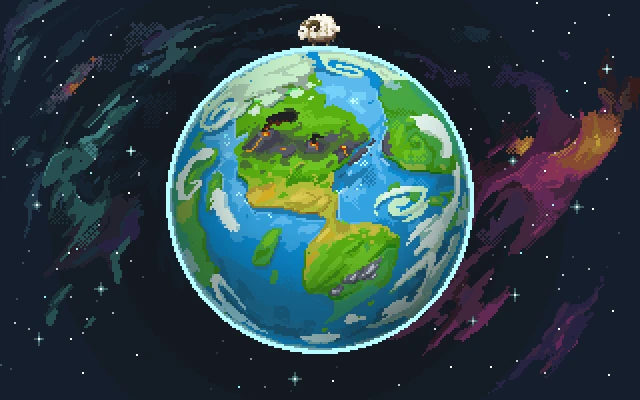

联合库UNHub游戏
2025 年 2 月 25 日
世界盒子 WorldBox
0.14.2版本 解压即玩
最好的神沙盒游戏
WORLDBOX - GOD SIMULATOR 现已推出
在：PC，Mac & Linux，ANDROID和iOS上！立即在 STEAM 上获取！Worldbox 是适用于 Windows、Mac、Linux 和移动设备的最佳上帝游戏！这是终极的上帝模拟器和沙盒游戏。创造你自己的世界，成为上帝！
不想从STEAM 上获取？还有一种方法，就是从本站免费下载世界盒子 WorldBox 0.14.2版本，解压即玩。
构建自己的世界
在 Worldbox 中，您可以构建自己的世界并充满生命。
创造不同的生物：绵羊、狼、人类、兽人、矮人，甚至龙或不明飞行物！
观察文明如何进步并相互互动。或者你可以用你的力量来破坏。引发火灾、龙卷风、地震、发射陨石！
一切都取决于你！
点击下方专线链接下载游戏